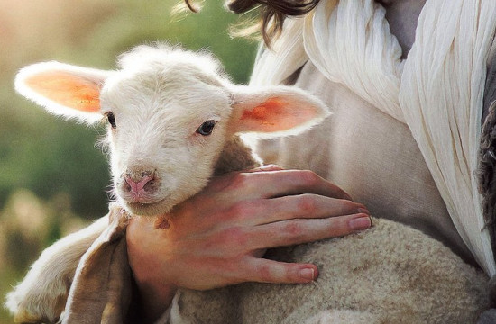

2º Trimestre de 2025
Título: E o Verbo se fez carne — Jesus sob o olhar do Apóstolo do amor
Comentarista: Elienai Cabral
Lição 6: O Bom Pastor e suas ovelhas
Data: 11 de maio de 2025

TEXTO ÁUREO
“Eu sou o bom Pastor, e conheço as minhas ovelhas, e das minhas sou conhecido.” (Jo 10.14).
VERDADE PRÁTICA
Jesus é o Bom Pastor e nós, que pertencemos à sua Igreja, somos as ovelhas do seu rebanho.
LEITURA BÍBLICA EM CLASSE
João 10.1-16.
1 — Na verdade, na verdade vos digo que aquele que não entra pela porta no curral das ovelhas, mas sobe por outra parte, é ladrão e salteador.
2 — Aquele, porém, que entra pela porta é o pastor das ovelhas.
3 — A este o porteiro abre, e as ovelhas ouvem a sua voz, e chama pelo nome às suas ovelhas e as traz para fora.
4 — E, quando tira para fora as suas ovelhas, vai adiante delas, e as ovelhas o seguem, porque conhecem a sua voz.
5 — Mas, de modo nenhum, seguirão o estranho; antes, fugirão dele, porque não conhecem a voz dos estranhos.
6 — Jesus disse-lhes esta parábola, mas eles não entenderam o que era que lhes dizia.
7 — Tornou, pois, Jesus a dizer-lhes: Em verdade vos digo que eu sou a porta das ovelhas.
8 — Todos quantos vieram antes de mim são ladrões e salteadores, mas as ovelhas não os ouviram.
9 — Eu sou a porta; se alguém entrar por mim, salvar-se-á, e entrará, e sairá, e achará pastagens.
10 — O ladrão não vem senão a roubar, a matar e a destruir; eu vim para que tenham vida e a tenham com abundância.
11 — Eu sou o bom Pastor; o bom Pastor dá a sua vida pelas ovelhas.
12 — Mas o mercenário, que não é pastor, de quem não são as ovelhas, vê vir o lobo, e deixa as ovelhas, e foge; e o lobo as arrebata e dispersa.
13 — Ora, o mercenário foge, porque é mercenário e não tem cuidado das ovelhas.
14 — Eu sou o bom Pastor, e conheço as minhas ovelhas, e das minhas sou conhecido.
15 — Assim como o Pai me conhece a mim, também eu conheço o Pai e dou a minha vida pelas ovelhas.
16 — Ainda tenho outras ovelhas que não são deste aprisco; também me convém agregar estas, e elas ouvirão a minha voz, e haverá um rebanho e um Pastor.
INTRODUÇÃO
Nesta lição, estudaremos o capítulo 10 do Evangelho de João, destacando a figura de Jesus como o Bom Pastor, aquEle que protege, cuida e orienta as suas ovelhas. Analisaremos o contexto em que nosso Senhor é descrito como “A Porta das Ovelhas” e a conexão desta imagem com o aprisco das ovelhas, que representa o lugar de habitação do rebanho. Por fim, diferenciaremos as figuras do Bom Pastor e do mercenário, para que possamos reconhecer a voz do verdadeiro pastor de nossas almas.
Palavra-Chave:
CUIDADO
I. JESUS, A PORTA DAS OVELHAS
1. O contexto. Este capítulo é antecedido pelo capítulo 9, onde Jesus teve uma conversa breve com fariseus que tentavam encontrar algum ponto de discórdia para acusá-lo (Jo 9.40,41). No capítulo 10, o nosso Senhor interrompe esse diálogo após a cura de um cego de nascença, que foi expulso da sinagoga da cidade porque sabiam que o seu testemunho os incomodaria. No entanto, Jesus utilizou a parábola do Pastor e das Ovelhas para caracterizar os religiosos como falsos pastores e, mais especificamente, como mercenários. Este relato possui a mesma força da crítica aos falsos pastores presente na profecia de Ezequiel 34.1-10.
2. A Porta das Ovelhas. Nesta parábola de Jesus, contada no capítulo 10 de João, destacam-se dois pontos principais. Em primeiro lugar, Ele entra pela porta do aprisco onde se encontram as ovelhas (Jo 10.1-3). Em segundo lugar, Ele se refere a si mesmo como “a porta das ovelhas” (Jo 10.7). Nos primeiros versículos de João 10, sugere-se que aquele que passa pela porta do aprisco é o verdadeiro pastor, enquanto quem utiliza outros caminhos é associado a “ladrões e salteadores”. Assim, as ovelhas reconhecem a voz do verdadeiro pastor e não dão atenção ao mercenário. Além disso, Jesus afirma: “Eu sou a Porta” (Jo 10.7); e logo depois declara: “Eu sou o Bom Pastor” (Jo 10.11). Estas declarações são direcionadas aos líderes religiosos judeus, que podem ser vistos como falsos pastores do povo (Jo 10.11,14), pois não cuidavam, protegiam ou orientavam o povo de Deus.
3. A mensagem da porta. O significado contido na frase “Eu Sou a Porta” é bastante claro: existe apenas um caminho exclusivo para entrar no Reino de Deus, que é através da fé em Jesus Cristo. O nosso Senhor atua como a porta de acesso direto ao Pai (Hb 4.14,15), permitindo-nos aproximarmos dEle com ousadia e confiança (Hb 4.16). Para desfrutarmos de uma relação eterna e significativa com Deus, é essencial crer em Jesus, viver conforme os seus ensinamentos e obedecê-lo plenamente. O nosso Senhor é a “porta” pela qual todos os pecadores devem entrar.
II. O APRISCO DAS OVELHAS
1. Parábola? Uma alegoria? O versículo 6 indica que a história narrada pelo nosso Senhor é uma parábola. Trata-se de uma narrativa, normalmente breve, que ensina através de uma alegoria. Assim, o Senhor Jesus comunicava as suas lições de forma sistemática utilizando a parábola. Desta forma, as figuras do Pastor e das Ovelhas servem como símbolos para ilustrar o ensinamento de Cristo sobre o pastoreio das ovelhas no aprisco.
2. O aprisco das ovelhas. O aprisco das ovelhas consistia, essencialmente, numa edificação de pedras que possuía apenas uma entrada (ou porta) por onde as ovelhas eram levadas para dentro ao entardecer (Jo 10.1). Essas ovelhas eram supervisionadas pelo porteiro, ou pastor, que se acomodava junto à entrada do abrigo para assegurar a proteção delas. Desta forma, a representação simbólica do abrigo remete à atividade pastoril que os judeus exerceram ao longo de várias gerações, assim como à relação religiosa entre os líderes judeus e a população. Portanto, atualmente, essa imagem simbólica da parábola pode ser relacionada ao vínculo da Igreja de Cristo com o Senhor Jesus, nosso Sumo Pastor (1Pe 5.4).
3. Um lugar de proteção. O aprisco das ovelhas simboliza também um espaço de proteção. Este local é defendido diretamente pelo Pastor do Rebanho, que está disposto a sacrificar-se, se necessário (Jo 10.11). Não existe lugar mais seguro do que aquele que está sob a vigilância e proteção do Sumo Pastor, o Senhor Jesus Cristo. O seu compromisso com o seu rebanho ficou evidente através da sua obra realizada no Calvário (Jo 19.30). Assim, as afirmações “Eu sou a porta” (v.9) e “Eu sou o bom pastor” (v.11) expressam essa realidade de cuidado por todos os que fazem parte do Corpo de Cristo (Cl 1.24).
III. A DISTINÇÃO ENTRE O BOM PASTOR E O MERCENÁRIO
1. O Bom Pastor. O versículo 11 menciona que Jesus é o “Bom Pastor” que sacrifica a sua vida pelas ovelhas. Em contraste com o ladrão (v.10), que vem para roubar, matar e destruir, a missão do Bom Pastor é oferecer vida, tanto na perspectiva eterna/celestial da salvação, como na dimensão virtuosa da santidade enquanto forma de viver no mundo (Jo 20.31; Rm 8.29). A generosidade do Sumo Pastor é sem igual, pois ninguém pode defender as suas ovelhas como Ele faz. O nosso Senhor é indiscutivelmente o melhor dos pastores. Quem entra no seu aprisco encontra uma vida verdadeira.
2. O Mercenário. O versículo 12 apresenta a figura do mercenário. Ao contrário do Bom Pastor, que se sacrifica pela vida das ovelhas, o mercenário opta por fugir diante do perigo, dispersando e roubando as ovelhas. Não demonstra zelo nem cuidado por elas. Por essa razão, é simbolizado como ladrão e bandido. Assim, enquanto o Bom Pastor promove a vida, o mercenário traz consigo a morte; em vez de construir, ele destrói tudo o que encontra pelo caminho. Ele abandona as ovelhas à sua própria sorte. A representação do mercenário ilustra o caráter dos falsos líderes e mestres fraudulentos que procuram constantemente semear divisões entre o povo de Deus.
3. Lobos vorazes X o Bom Pastor. Os lobos aproximam-se do aprisco para atacar as ovelhas apenas quando percebem que o mercenário não está atento à sua chegada. O mercenário, por sua vez, opta por fugir e abdica das suas responsabilidades: “Mas o mercenário que não é pastor, de quem não são as ovelhas, foge, e o lobo arrebata e dispersa” (Jo 10.12). Não é por acaso que o apóstolo Paulo descreve esses “lobos vorazes” como sendo os falsos mestres que promovem doutrinas enganosas e comprometem a fé recebida do Evangelho, iludindo e levando consigo as ovelhas desatentas (At 20.29,30). Estes têm intenções destrutivas (2Co 2.17), geram divisões no rebanho (Tt 3.10) e dispersam as ovelhas (1Jo 2.18,19; 4.1-3). Por essa razão, nosso Senhor se apresenta como a Porta das Ovelhas, o Bom Pastor (Mt 7.13,14; Lc 13.24).
CONCLUSÃO
O Senhor afirmou que as suas ovelhas conhecem a sua voz e a reconhecem, seguindo-a (Jo 10.27). Desta forma, aqueles que pertencem ao grande rebanho do Sumo Pastor têm a alegria de conhecer e reconhecer a sua voz. Assim sendo, não devemos perder tempo ouvindo a voz do lobo. A voz do Bom Pastor é mais do que suficiente para nos guiar ao longo da nossa caminhada na vida cristã.
REVISANDO O CONTEÚDO
1. Qual foi a finalidade de Jesus ao utilizar a parábola do Pastor e das Ovelhas?
Jesus utilizou a parábola do Pastor e das Ovelhas para caracterizar os religiosos como falsos pastores e, mais especificamente, como mercenários.
2. Qual é a mensagem evidente da afirmação “Eu Sou a Porta”?
O significado contido na frase “Eu Sou a Porta” é bastante claro: existe apenas um caminho exclusivo para entrar no Reino de Deus, que é através da fé em Jesus Cristo.
3. O que constituía o aprisco das ovelhas?
O aprisco das ovelhas consistia, essencialmente, numa edificação de pedras que possuía apenas uma entrada (ou porta) por onde as ovelhas eram levadas para dentro ao entardecer (Jo 10.1).
4. Qual é a missão do Bom Pastor?
A missão do Bom Pastor é oferecer vida, tanto na perspectiva eterna/celestial da salvação, como na dimensão virtuosa da santidade enquanto forma de viver no mundo (Jo 20.31; Rm 8.29).
5. De que forma você pode caracterizar o Mercenário?
O mercenário opta por fugir diante do perigo, dispersando e roubando as ovelhas. Não demonstra zelo nem cuidado por elas.